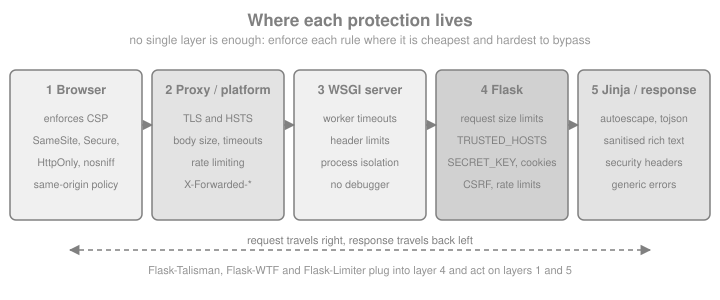

Security Considerations
|
This content was generated with the assistance of AI and should be verified against the official documentation before being relied on in production. |
This page is written against Flask 3.1.3 (released 2026-02-18), Werkzeug 3.1.9, Jinja 3.1.6, MarkupSafe 3.0.4, Flask-WTF 1.3.0,
Flask-Talisman 1.1.0, Flask-Limiter 4.1.1 and nh3 0.3.7 on Python 3.13, checked on 2026-10-07; every Python block was executed
with app.test_client(). Flask 3.2 is not released yet, and its unreleased changelog contains nothing that changes the
advice below. Flask protects a few things by default (Jinja escapes values, the session cookie is signed, request limits can
be configured) and leaves the rest to the application, so this page follows the structure of the official security page
(resource use, XSS, CSRF, JSON, security headers, cookie options, host header validation, copy/paste to a terminal) and adds
what a real application also needs: the debugger, secrets and key rotation, open redirects, injection, rate limiting and
dependency auditing. The running scenario is the Bookshelf catalogue built by the other pages of this section.
Security is a property of the whole deployment, not of one framework. The official page itself says that many solutions are trade-offs that depend on the threat model, and that hosting platforms may already take care of some problems. The page therefore says for each topic which layer is the best place to enforce it.
Where Each Protection Lives
A request passes through several layers before it reaches a view, and a response passes through them on the way back. The same weakness is often best fixed in a layer other than Flask: body size and timeouts at the reverse proxy, HSTS at the TLS terminator, escaping in the template engine, CSRF in the form library.

| Layer | Typical protections | Library or setting |
|---|---|---|
Reverse proxy / platform |
TLS, HSTS, body size and timeouts, connection limits, rate limiting, request filtering |
nginx |
WSGI server |
Worker timeouts, header and request-line limits, process isolation |
Gunicorn and Waitress options (see the deployment pages) |
Flask configuration |
Request size limits, trusted hosts, session cookie flags, secret keys |
|
Hooks and extensions |
CSRF tokens, security headers, rate limiting, authentication |
Flask-WTF, Flask-Talisman, Flask-Limiter, |
Jinja and Werkzeug |
Autoescaping, signed cookies, password hashing, safe file serving |
Jinja, MarkupSafe, ItsDangerous, |
Browser |
Enforcement of CSP, |
Response headers set by the layers above |
Source: Flask: Security Considerations
Resource Use and Denial of Service
A common category of attacks makes each request cost more processing time or memory than the server can afford, until legitimate requests starve. Since Flask 3.1 the framework has three settings for the memory side of this problem. Each is also an attribute of the request, so a single view can raise or lower it.
| Config key | Request attribute | Default | What it limits |
|---|---|---|---|
|
|
|
Bytes read from the request body. Over the limit, Werkzeug raises |
|
|
500,000 bytes |
Size of any single non-file field of a |
|
|
1000 |
Number of fields parsed from a |
The official page notes that the two form limits combine: with the defaults a form can occupy at most 500 MB of memory, which is far more than most applications need. The Bookshelf forms are small, so the example lowers all three, and shows that a view may override the limit for itself (for example a cover upload that is allowed more than a normal form). The override has to happen before the body is read.
import io
import secrets
from flask import Flask, request
app = Flask(__name__)
app.config.update(
SECRET_KEY=secrets.token_hex(32), # a real application reads this from configuration
MAX_CONTENT_LENGTH=64 * 1024, # every request body: at most 64 KiB
MAX_FORM_MEMORY_SIZE=16 * 1024, # any one text field: at most 16 KiB
MAX_FORM_PARTS=50, # at most 50 fields per form
)
@app.post("/books")
def add_book():
return {"title": request.form["title"]}, 201
@app.post("/books/<int:book_id>/cover")
def upload_cover(book_id):
request.max_content_length = 2 * 1024 * 1024 # this view only: 2 MiB
request.max_form_memory_size = 2 * 1024 * 1024 # see the note below the example
cover = request.files["cover"]
return {"book": book_id, "size": len(cover.read())}
client = app.test_client()
assert client.post("/books", data={"title": "Dune"}).status_code == 201
multipart = "multipart/form-data"
assert client.post("/books", data={"title": "x" * 100_000}).status_code == 413 # over 64 KiB
assert client.post("/books", data={"title": "x" * 20_000}, content_type=multipart).status_code == 413
many = {f"f{i}": "1" for i in range(60)}
assert client.post("/books", data=many, content_type=multipart).status_code == 413 # over 50 parts
big = {"cover": (io.BytesIO(b"0" * 200_000), "c.png")}
assert client.post("/books/1/cover", data=big).status_code == 200Source: Flask: Resource Use
The per-view override of max_form_memory_size in the upload view is deliberate. Werkzeug’s multipart parser reads the body
in chunks of up to 64 KiB and checks each chunk against max_form_memory_size, so in the tests for this page a global
limit lower than the size of the data being parsed (here 16 KiB) also rejected a 20 KB file part with 413, although
file parts are otherwise streamed to disk. Keep the global value low for ordinary forms and raise it on the views that
accept files.
The Flask limits protect memory, not time or connections. Slow clients, many connections and very expensive endpoints are handled by the layers around Flask: timeouts and connection limits in the WSGI server and the proxy, process limits in the container, and rate limiting. The upload-specific checks (content sniffing, generated names, storage outside the web root) are on the File Uploads page; what happens on 413 is explained there too.
Rate Limiting with Flask-Limiter
Rate limits stop brute-force logins, credential stuffing and scraping, and they cap the cost of expensive endpoints.
Flask-Limiter attaches limits to routes, with a default limit for everything else. The memory:// storage is only for
development and tests: it is per process, so with several Gunicorn workers each one counts separately. Production uses a
shared store such as Redis through storage_uri.
from flask import Flask
from flask_limiter import Limiter
from flask_limiter.util import get_remote_address
app = Flask(__name__)
limiter = Limiter(
get_remote_address, # the key function: one counter per client address
app=app,
default_limits=["200 per day", "50 per hour"],
storage_uri="memory://", # use "redis://..." from configuration in production
)
@app.post("/login")
@limiter.limit("5 per minute") # stricter limit for a brute-force target
def login():
return {"ok": False}, 401
client = app.test_client()
codes = [client.post("/login").status_code for _ in range(7)]
assert codes[:5] == [401] * 5 and codes[5:] == [429, 429]Source: Flask-Limiter documentation
Behind a proxy the remote address is the proxy’s unless the proxy headers are trusted (see Host Header Validation and Proxies); a limiter keyed on the wrong address either blocks everyone together or blocks nobody.
Cross-Site Scripting (XSS)
Cross-site scripting is the injection of arbitrary HTML, and with it JavaScript, into a page of your site. The script then
runs with the user’s session, so it can read the page, call your API as the user and send data elsewhere. The cure is to
escape text so that it cannot contain tags, and to restrict what the browser will execute. Flask configures Jinja to
escape every value automatically for templates ending in .html, .htm, .xml, .xhtml and .svg, and for
render_template_string. That rules out the common cases in templates, as the next block shows. Jinja is covered in
Jinja Templates; this page lists the places where the protection does not apply.
from flask import Flask, render_template_string
from markupsafe import Markup, escape
app = Flask(__name__)
with app.test_request_context():
title = "<script>alert(1)</script>"
page = render_template_string("<h1>{{ title }}</h1>", title=title)
assert page == "<h1><script>alert(1)</script></h1>"
# escape() returns a Markup object: already safe, never escaped twice.
assert str(escape(title)) == "<script>alert(1)</script>"
# Marking text as safe switches the protection off for that value.
unsafe = render_template_string("<h1>{{ title }}</h1>", title=Markup(title))
assert unsafe == "<h1><script>alert(1)</script></h1>"The official page lists where escaping does not help. Each item is a pitfall on its own:
-
Generating HTML without Jinja. Building markup with f-strings or string concatenation and returning it bypasses autoescaping. Use a template, or call
markupsafe.escapeon every dynamic part. -
Calling
Markup(or the|safefilter) on user-submitted data.Markupmeans "this is already safe HTML". It is appropriate for HTML you wrote or sanitised, never for raw input. -
Sending uploaded HTML. A user can upload an HTML or SVG file that contains script. Never serve such files inline from your origin; send them as downloads with
Content-Disposition: attachment. -
Sending uploaded text files. Some browsers guess the content type from the first bytes, so a file served as text can be executed as HTML. Serve a correct
Content-TypeandX-Content-Type-Options: nosniff, and useattachmentfor anything user-controlled. -
Unquoted attributes, discussed next.
-
javascript:URLs inhrefand similar attributes, discussed after that.
Quote Every Attribute
Jinja escapes <, >, & and both quote characters, but an unquoted attribute value ends at the first space, so escaping
does not stop an attacker from adding a new attribute. The official example injects an event handler that runs when the
mouse moves over the field. Always put a Jinja expression inside an attribute in double or single quotes.
from flask import Flask, render_template_string
app = Flask(__name__)
payload = "x onmouseover=alert(document.cookie)"
with app.test_request_context():
bad = render_template_string("<input value={{ v }}>", v=payload)
good = render_template_string('<input value="{{ v }}">', v=payload)
assert bad == "<input value=x onmouseover=alert(document.cookie)>" # a second attribute
assert good == '<input value="x onmouseover=alert(document.cookie)">' # one harmless valuejavascript: URLs
Escaping cannot make <a href="{{ value }}"> safe: javascript:alert('unsafe') contains no character that HTML escaping
changes, and the browser executes it when the link is clicked. There are two defences, and good applications use both.
The official page recommends a Content Security Policy (see Security Headers) that forbids inline script, which
also blocks javascript: URLs. The second is to validate the scheme of every user-supplied URL before storing or rendering
it. The Bookshelf author-website field is a typical case.
from urllib.parse import urlsplit
ALLOWED_SCHEMES = {"http", "https"}
def safe_external_url(value: str) -> str | None:
"""Return the URL if it is an absolute http(s) URL, otherwise None."""
parts = urlsplit(value.strip())
if parts.scheme.lower() in ALLOWED_SCHEMES and parts.netloc:
return value.strip()
return None
assert safe_external_url("https://example.org/author") == "https://example.org/author"
assert safe_external_url("javascript:alert('unsafe')") is None
assert safe_external_url(" JaVaScRiPt:alert(1)") is None
assert safe_external_url("data:text/html,<script>1</script>") is None
assert safe_external_url("//evil.test/x") is None # protocol-relative: no schemeData Inside a script Block
To pass server data to JavaScript, do not concatenate it into a script. The tojson filter produces valid JSON in which
<, >, & and the single quote are replaced by \u escapes, so the value cannot close the script element and is safe
inside a single-quoted attribute as well.
from flask import Flask, render_template_string
app = Flask(__name__)
book = {"title": "</script><img src=x onerror=alert(1)>", "year": 1965}
with app.test_request_context():
html = render_template_string("<script>const book = {{ book|tojson }};</script>", book=book)
assert "</script><img" not in html
assert "\\u003c/script\\u003e" in htmlAllowing Some HTML: Sanitise, Do Not Escape by Hand
When users may write rich text (a review with bold and links), escaping is not enough because the markup must survive. The
answer is an allow-list sanitiser, applied when the content is stored or rendered, and only then marked as safe. The
maintained Python choice is nh3 (a binding to the Rust ammonia library); the older bleach package is deprecated.
Allow only the tags, attributes and URL schemes you need.
import nh3
from markupsafe import Markup
dirty = (
'<b onclick="x()">bold</b><script>alert(1)</script>'
'<a href="javascript:alert(1)">bad</a><a href="https://example.org">good</a>'
)
clean = nh3.clean(
dirty,
tags={"b", "i", "em", "strong", "a"},
attributes={"a": {"href"}},
url_schemes={"http", "https"},
)
assert "<script" not in clean and "onclick" not in clean and "javascript:" not in clean
assert 'href="https://example.org"' in clean
review_html = Markup(clean) # safe to mark only AFTER sanitisingSource: nh3 documentation
Template Injection: Never Build Templates from Input
render_template_string is safe when the template is a constant and the user’s data is a variable. It is a critical
vulnerability (server-side template injection) when the template text itself contains user input, because Jinja expressions
run on the server and can reach Python objects. The next block demonstrates it with a harmless arithmetic expression.
from flask import Flask, render_template_string
app = Flask(__name__)
name = "{{ 7 * 7 }}" # attacker-controlled
with app.test_request_context():
wrong = render_template_string("Hello " + name) # input became template code
right = render_template_string("Hello {{ name }}", name=name)
assert wrong == "Hello 49"
assert right == "Hello {{ 7 * 7 }}"Source: Jinja: Sandbox
Cross-Site Request Forgery (CSRF)
If authentication is stored in a cookie, "being logged in" is implicit state that the browser attaches to every request to
your site, including requests triggered by another site. A page controlled by an attacker can submit a form to
https://bookshelf.example/books/7/delete while the victim is logged in, and the browser will send the session cookie
along. The classic defence is a secret, unpredictable token that is stored in the session and also placed in every form
or request header; the server compares the two for each state-changing request, and a foreign page cannot read the token.
The official page explains the idea and says that Flask does not implement it because the natural place is a form
validation framework, which Flask does not include. In practice you use Flask-WTF, which is introduced in
Forms with Flask-WTF, where its CSRF settings are documented
(WTF_CSRF_ENABLED, WTF_CSRF_TIME_LIMIT, headers, exemptions). CSRFProtect extends the check to every unsafe method
(POST, PUT, PATCH, DELETE) of the whole application, not only to FlaskForm instances.
import secrets
from flask import Flask, jsonify
from flask_wtf.csrf import CSRFProtect, generate_csrf
app = Flask(__name__)
app.config["SECRET_KEY"] = secrets.token_hex(32)
csrf = CSRFProtect(app) # checks every POST, PUT, PATCH and DELETE
@app.get("/csrf-token")
def csrf_token():
return jsonify(csrf_token=generate_csrf()) # a single-page app reads it once
@app.post("/books/<int:book_id>/delete")
def delete_book(book_id):
return {"deleted": book_id}
@app.post("/webhooks/payments")
@csrf.exempt # authenticated by a signature, not a cookie
def webhook():
return {"ok": True}
client = app.test_client()
assert client.post("/books/7/delete").status_code == 400 # forged: no token
token = client.get("/csrf-token").get_json()["csrf_token"] # same session cookie
ok = client.post("/books/7/delete", headers={"X-CSRFToken": token})
assert ok.status_code == 200
assert client.post("/webhooks/payments").status_code == 200Source: Flask-WTF: CSRF Protection
Points that decide whether the protection actually works:
-
Cookie attributes are a second line. A session cookie with
SameSite=Laxis not sent with cross-sitePOSTrequests, which already blocks the textbook attack in current browsers. Treat it as defence in depth: token checks still cover subdomain and same-site attacks and older clients. See Set-Cookie Options. -
Never change state on
GET. A link or image tag is aGET, andSameSite=Laxstill sends cookies for top-level navigations. State-changing endpoints usePOST,PUT,PATCHorDELETE. -
Token-authenticated APIs are different. An API that reads a bearer token from the
Authorizationheader (not from a cookie) is not vulnerable to CSRF, because the browser does not attach that header by itself; exempt such blueprints fromCSRFProtectexplicitly rather than turning the protection off. An API that accepts the session cookie needs the token. -
Require a JSON content type.
request.get_json()rejects bodies that are notapplication/jsonwith 415, and a cross-site form cannot send that content type without a CORS preflight. Do not useget_json(force=True)on state-changing endpoints for that reason. -
Login forms need tokens too, otherwise an attacker can log a victim into the attacker’s account.
-
CORS is not CSRF protection. CORS decides which sites may read responses; it does not stop a browser from sending a simple cross-site request. See CORS for the browser rules.
For OAuth-style APIs and browser applications that hold tokens, read Browser-Based Apps and OAuth Security Best Practices instead of repeating that theory here.
JSON Security
In Flask 0.10 and older, jsonify() refused to serialize a top-level array because of a vulnerability in ECMAScript 4
(JSON hijacking: a cross-site script tag could read the array through an overridden Array constructor). ECMAScript 5
closed the hole, only extremely old browsers are affected and they have worse problems, so current Flask serializes
arrays; Flask 2.2 even lets a view return a list directly. Old books that wrap arrays in an object "for security" describe
a problem that no longer exists. The JSON-related risks that remain are different:
-
Serving user-controlled JSON with an HTML content type. Return it through
jsonifyor a dict so that the content type isapplication/json. -
Putting JSON into HTML without
tojson(see Data Inside a script Block). -
Trusting the shape of the input. Validate bodies with a schema library (see the REST API pages) and treat missing keys and wrong types as
400/422, not as server errors. -
Accepting very large or deeply nested bodies. The resource limits above apply to JSON bodies too.
from flask import Flask, jsonify, request
app = Flask(__name__)
@app.get("/api/books")
def books():
return jsonify([{"id": 1, "title": "Dune"}]) # a top-level array is fine
@app.post("/api/books")
def add():
data = request.get_json() # 415 unless Content-Type is application/json
return jsonify(data), 201
client = app.test_client()
resp = client.get("/api/books")
assert resp.mimetype == "application/json" and resp.get_json()[0]["id"] == 1
assert client.post("/api/books", data="title=Dune").status_code == 415
assert client.post("/api/books", json={"title": "Dune"}).status_code == 201Source: Flask: JSON Security
Security Headers
Browsers enforce a set of response headers that narrow what a page may do. The official page recommends reviewing four of them and mentions that the Flask-Talisman extension can manage them and HTTPS for you.
| Header | Effect | Typical value |
|---|---|---|
|
Tells the browser to use HTTPS for all further requests to the site, defeating man-in-the-middle downgrades. |
|
|
Restricts where scripts, styles, images and frames may load from; a strict policy also blocks inline script and |
|
|
Makes the browser honour the declared content type instead of sniffing, which can be abused for XSS. |
|
|
Stops other sites from embedding your pages in a frame (clickjacking). CSP |
|
Two more are commonly added: Referrer-Policy (what is sent in the Referer header, for example
strict-origin-when-cross-origin) and Permissions-Policy (which browser features the page may use). The headers can be
set by hand in an after_request hook, which is enough for small applications and makes the values explicit.
from flask import Flask
app = Flask(__name__)
@app.get("/")
def index():
return "Bookshelf"
@app.after_request
def add_security_headers(response):
response.headers["Strict-Transport-Security"] = "max-age=31536000; includeSubDomains"
response.headers["Content-Security-Policy"] = "default-src 'self'"
response.headers["X-Content-Type-Options"] = "nosniff"
response.headers["X-Frame-Options"] = "SAMEORIGIN"
response.headers["Referrer-Policy"] = "strict-origin-when-cross-origin"
return response
headers = app.test_client().get("/").headers
assert headers["X-Content-Type-Options"] == "nosniff"
assert headers["Content-Security-Policy"] == "default-src 'self'"Source: Flask: Security Headers
Flask-Talisman
Flask-Talisman (a Google-originated extension; version 1.1.0 here) sets these headers for you, redirects HTTP to HTTPS,
forces the session cookie to be Secure, HttpOnly and SameSite=Lax, and can generate a per-request nonce for CSP so
that only your own inline scripts run. Its main arguments are listed below; all names were checked against the installed
package.
| Argument | Default | Effect |
|---|---|---|
|
|
Redirects plain HTTP requests to HTTPS (302 unless |
|
|
HSTS header. Enable |
|
|
The CSP as a dict (or a string). |
|
|
Directives (for example |
|
|
|
|
|
|
|
|
|
|
|
|
|
|
Sets the corresponding Flask session cookie options. |
Behind a TLS-terminating proxy the application sees plain HTTP, so force_https would redirect forever unless the proxy
headers are trusted (see Host Header Validation and Proxies) or force_https=False is set and the proxy
enforces HTTPS.
import secrets
from flask import Flask, render_template_string
from flask_talisman import Talisman
app = Flask(__name__)
app.config["SECRET_KEY"] = secrets.token_hex(32)
csp = {"default-src": "'self'", "script-src": "'self'", "img-src": ["'self'", "data:"]}
Talisman(app, content_security_policy=csp, content_security_policy_nonce_in=["script-src"])
@app.get("/")
def index():
# csp_nonce() is added to the Jinja globals by Talisman
return render_template_string('<script nonce="{{ csp_nonce() }}">console.log("ok")</script>')
client = app.test_client()
assert client.get("/").status_code == 302 # plain HTTP is redirected
secure = client.get("/", base_url="https://localhost")
policy = secure.headers["Content-Security-Policy"]
assert "script-src 'self' 'nonce-" in policy
nonce = policy.split("'nonce-")[1].split("'")[0]
assert f'nonce="{nonce}"' in secure.text # inline script allowed by nonce only
assert secure.headers["Strict-Transport-Security"].startswith("max-age=")
assert secure.headers["X-Frame-Options"] == "SAMEORIGIN"Source: Flask-Talisman
A strict CSP is the strongest defence against XSS because it limits the damage of a missed escape: inline onclick
handlers, javascript: URLs and scripts from unknown hosts simply do not run. The price is refactoring inline scripts and
styles; roll out with content_security_policy_report_only first. Use CSP Evaluator
to review a policy. Static assets with their own versioned URLs are covered in
Static Files & Assets.
Set-Cookie Options
Three attributes make cookies harder to steal or misuse, and Flask has configuration keys for the session cookie. The same
options can be passed to response.set_cookie for every other cookie.
| Attribute | Flask session setting | Effect |
|---|---|---|
|
|
The browser sends the cookie over HTTPS only. Set it to |
|
|
JavaScript cannot read the cookie, so an XSS flaw cannot copy the session. |
|
|
|
|
|
Without either attribute the cookie disappears when the browser closes. For the session cookie the signature is also rejected when it is older than the lifetime, which limits replay of an intercepted cookie. |
|
|
Cookie partitioned by top-level site, for embedded third-party contexts. |
The complete list of session settings, the cookie name, domain and path, and the session mechanics are on Sessions, Cookies & Flashing. A hardened configuration, a login that avoids session fixation and a non-session cookie follow.
import secrets
from flask import Flask, session
app = Flask(__name__)
app.config.update(
SECRET_KEY=secrets.token_hex(32),
SESSION_COOKIE_NAME="__Host-session", # the __Host- prefix needs Secure, Path=/ and no Domain
SESSION_COOKIE_SECURE=True,
SESSION_COOKIE_HTTPONLY=True,
SESSION_COOKIE_SAMESITE="Lax",
PERMANENT_SESSION_LIFETIME=600, # seconds; also bounds the signature age
)
@app.post("/login")
def login():
# authenticate the user first (see the authentication pages), then:
session.clear() # drop anything an attacker may have planted before login
session["user_id"] = 42
session.permanent = True
resp = app.make_response({"ok": True})
resp.set_cookie("theme", "dark", max_age=600, secure=True, httponly=True, samesite="Lax")
return resp
client = app.test_client()
cookies = client.post("/login", base_url="https://localhost").headers.getlist("Set-Cookie")
session_cookie = next(c for c in cookies if c.startswith("__Host-session="))
for attribute in ("Secure", "HttpOnly", "SameSite=Lax", "Path=/", "Expires="): # permanent: expires in 10 minutes
assert attribute in session_cookie, attribute
assert "Domain" not in session_cookie
assert any(c.startswith("theme=dark") and "Secure" in c for c in cookies)Source: Flask: Set-Cookie options
Calling session.clear() before storing the user id at login prevents session fixation, where an attacker plants a known
session before the victim authenticates. Use the same call at logout. Use itsdangerous.URLSafeTimedSerializer to sign
and time-limit other values (an email confirmation link, a password-reset token) with a distinct salt per purpose, as the
official page recommends.
The Session Is Signed, Not Encrypted
Several books state that the Flask session cookie is encrypted. That is wrong. The default session is a JSON payload, compressed when that is smaller, base64-encoded and signed with the secret key; anyone can read it, nobody can change it. The block shows how little effort it takes to read a cookie without the key, which is why secrets, passwords and anything the user must not see never belong in the default session.
import base64, json, secrets, zlib
from flask import Flask, session
app = Flask(__name__)
app.config["SECRET_KEY"] = secrets.token_hex(32)
@app.get("/")
def index():
session["user_id"] = 42
session["role"] = "editor"
return "ok"
def peek(cookie_value: str) -> dict:
"""Decode a Flask session cookie WITHOUT knowing the secret key."""
payload = cookie_value.split(".")[0]
compressed = payload.startswith(".")
payload = payload.lstrip(".")
raw = base64.urlsafe_b64decode(payload + "=" * (-len(payload) % 4))
return json.loads(zlib.decompress(raw) if compressed else raw)
client = app.test_client()
client.get("/")
cookie = client.get_cookie("session").value
assert peek(cookie) == {"user_id": 42, "role": "editor"} # readable, but not forgeableFor secret data or revocable logins use a server-side session store, as described on the sessions page.
Host Header Validation and Proxies
The Host header tells the application which host name the client used, and Flask uses it to build absolute URLs
(url_for(..., _external=True)) that end up in emails, redirects and password-reset links. Browsers do not let a page set
Host, but other clients can, and a forged value can poison those links (a password-reset email pointing to the attacker’s
host). By default Flask accepts any host. Since Flask 3.1 the TRUSTED_HOSTS setting (the Request.trusted_hosts
attribute) restricts it; a request with another host is rejected with 400 during routing. A leading dot matches the domain
and all its subdomains.
from flask import Flask, url_for
app = Flask(__name__)
app.config["TRUSTED_HOSTS"] = ["bookshelf.example.com", ".example.org"]
@app.get("/reset")
def reset():
return url_for("reset", _external=True)
client = app.test_client()
assert client.get("/reset", base_url="http://bookshelf.example.com").status_code == 200
assert client.get("/reset", base_url="http://shop.example.org").status_code == 200
assert client.get("/reset", base_url="http://example.org").status_code == 200
assert client.get("/reset", base_url="http://evil.test").status_code == 400Source: Flask: Host Header Validation
Proxies change Host, the client address and the scheme. The official proxy page explains how to tell Flask which
proxy values to trust with Werkzeug’s ProxyFix middleware, whose arguments (x_for, x_proto, x_host, x_prefix) are
the number of trusted proxies in front of the application. Trusting more hops than exist lets any client forge the values
and defeats TRUSTED_HOSTS, the rate limiter and Talisman’s HTTPS detection together; trust exactly as many as you run.
from flask import Flask, request, url_for
from werkzeug.middleware.proxy_fix import ProxyFix
app = Flask(__name__)
# one proxy sets X-Forwarded-For, -Proto and -Host: trust exactly one hop
app.wsgi_app = ProxyFix(app.wsgi_app, x_for=1, x_proto=1, x_host=1)
@app.get("/where")
def where():
return {"ip": request.remote_addr, "url": url_for("where", _external=True)}
forwarded = {
"X-Forwarded-For": "203.0.113.9",
"X-Forwarded-Proto": "https",
"X-Forwarded-Host": "bookshelf.example.com",
}
data = app.test_client().get("/where", headers=forwarded).get_json()
assert data == {"ip": "203.0.113.9", "url": "https://bookshelf.example.com/where"}Copy/Paste to a Terminal
Hidden characters can make text render differently in HTML than it behaves when pasted into a terminal. A backspace
(\b, ^H) makes import y\bose\bm\bi\bt\be\b display as import yosemite while the terminal, which applies the
backspaces, runs import os. If your site shows user-contributed code (comments on a technical blog, a Bookshelf review
that quotes a command), consider stripping control characters from it. Most modern terminals warn about or remove hidden
characters when pasting, so this is a precaution and not a guarantee: a dangerous command can be crafted in other ways, and
on some sites a general warning about pasting commands is the better answer.
import re
CONTROL = re.compile(r"[\x00-\x08\x0b-\x1f\x7f]") # keeps tab (\x09) and newline (\x0a)
def clean_snippet(text: str) -> str:
return CONTROL.sub("", text)
tricky = "import y\bose\bm\bi\bt\be\b"
assert clean_snippet(tricky) == "import yosemite"
assert clean_snippet("line one\n\tline two") == "line one\n\tline two"
assert "\b" not in clean_snippet(tricky)Source: Flask: Copy/Paste to Terminal
Never Run the Debugger in Production
The Werkzeug interactive debugger shows a traceback in the browser and lets whoever sees it execute Python in any frame. It is protected by a PIN, but that is a convenience against accidents on a developer’s laptop, not a security boundary; a reachable debugger is remote code execution. Debug mode also enables the reloader and detailed error pages. The rules:
-
Run production with a real WSGI server (Gunicorn, Waitress, uWSGI), never
flask runorapp.run(). -
Never set
FLASK_DEBUG=1,--debugorapp.debug = Trueoutside a developer machine, and never bind a debug server to a public address (--host 0.0.0.0). -
Do not hard-code
debug=Trueinapp.run(...); take the value from the environment so that a deployment cannot get it by accident. -
Show users a generic error page and log the details; see Error Handling for handlers that avoid leaking exception text.
A cheap guard in the application factory refuses to start a production configuration with debugging on:
import os
import secrets
from flask import Flask
def create_app(env: str | None = None) -> Flask:
env = env or os.environ.get("BOOKSHELF_ENV", "production")
app = Flask(__name__)
app.config["DEBUG"] = env == "development"
if env == "production" and app.debug:
raise RuntimeError("debug mode must not be enabled in production")
app.config["SECRET_KEY"] = os.environ.get("BOOKSHELF_SECRET_KEY") or secrets.token_hex(32)
return app
assert create_app("production").debug is False
assert create_app("development").debug is TrueThe development-only commands look like this and appear here only to show what must not reach a server:
flask --app bookshelf run --debug # development laptop only, bound to 127.0.0.1
gunicorn --bind 0.0.0.0:8000 "bookshelf:create_app()" # production: a real server, no debuggerSecret Management and Key Rotation
A Flask application holds several confidential values: the signing key for sessions and tokens, database credentials, API keys for other services and OAuth client credentials. Rules that hold for all of them:
-
Never commit a secret, not even "temporarily" and not even a placeholder that looks real. Several books show a literal string used as the signing key, and cloud keys, written in the code; that pattern must not be copied. A weak or published
SECRET_KEYlets anyone forge a session cookie for any user. -
Generate keys with
secrets:python -c 'import secrets; print(secrets.token_hex())'produces a suitable value from the operating system’s secure random source. -
Read secrets from the environment or a secret store (container secrets, a cloud secret manager) at start-up, and fail fast when one is missing, as in the next block. The configuration page shows
from_prefixed_envand file-based configuration: Configuration. -
Keep them out of logs, error pages and
app.configdumps, and out of the Git history (a pre-commit scanner such asdetect-secretscatches common mistakes before they are pushed). -
Separate secrets per environment so that a leak of the staging key does not compromise production.
import os
import secrets
from flask import Flask
def load_secret(name: str) -> str:
value = os.environ.get(name)
if not value:
raise RuntimeError(f"environment variable {name} is required")
return value
os.environ["BOOKSHELF_SECRET_KEY"] = secrets.token_hex(32) # stands in for the real environment
app = Flask(__name__)
app.config["SECRET_KEY"] = load_secret("BOOKSHELF_SECRET_KEY")
assert len(app.config["SECRET_KEY"]) == 64
try:
load_secret("BOOKSHELF_DATABASE_PASSWORD")
missing = False
except RuntimeError:
missing = True
assert missing # refuses to start without itRotating SECRET_KEY
Rotation limits the damage of a leaked key, and it is needed after any suspected leak. Changing the key abruptly
invalidates every session and every signed link. Since Flask 3.1 the SECRET_KEY_FALLBACKS setting lists old keys that are
still accepted when verifying, while new signatures always use SECRET_KEY, so users migrate to the new key as their
cookies are refreshed. Flask 3.1.1 fixed the order in which signing keys were selected, so use 3.1.1 or later. Extensions
that sign data themselves must support the setting too (the changelog says that extensions need to add support), so check
each one that uses the key. Remove the old key after the longest session lifetime has passed.
import secrets
from flask import Flask, session
def make_app(secret_key: str, fallbacks: list[str] | None = None) -> Flask:
app = Flask(__name__)
app.config["SECRET_KEY"] = secret_key
if fallbacks:
app.config["SECRET_KEY_FALLBACKS"] = fallbacks
@app.get("/login")
def login():
session["user_id"] = 7
return "ok"
@app.get("/me")
def me():
return {"user_id": session.get("user_id")}
return app
old_key, new_key = secrets.token_hex(32), secrets.token_hex(32)
old_client = make_app(old_key).test_client()
old_client.get("/login")
cookie = old_client.get_cookie("session").value
rotated = make_app(new_key, fallbacks=[old_key]).test_client()
rotated.set_cookie("session", cookie)
assert rotated.get("/me").get_json() == {"user_id": 7} # old cookie still accepted
without = make_app(new_key).test_client() # fallback removed: cookie invalid
without.set_cookie("session", cookie)
assert without.get("/me").get_json() == {"user_id": None}Source: Flask: SECRET_KEY_FALLBACKS
Passwords and Tokens
Store passwords only as salted, slow hashes. Werkzeug’s generate_password_hash uses scrypt by default since Werkzeug
3.0, and its PBKDF2 method uses 1,000,000 iterations since 3.1; check_password_hash verifies without exposing timing
information. Compare API keys and other secrets with secrets.compare_digest (or store only their hash and compare the
hashes), not with ==.
import hashlib
import secrets
from werkzeug.security import check_password_hash, generate_password_hash
stored = generate_password_hash("correct horse battery staple") # a demonstration passphrase
assert stored.startswith("scrypt:")
assert check_password_hash(stored, "correct horse battery staple")
assert not check_password_hash(stored, "wrong guess")
api_key = secrets.token_urlsafe(32) # shown to the user once
stored_digest = hashlib.sha256(api_key.encode()).hexdigest() # only the digest is stored
def api_key_matches(presented: str) -> bool:
digest = hashlib.sha256(presented.encode()).hexdigest()
return secrets.compare_digest(digest, stored_digest)
assert api_key_matches(api_key) and not api_key_matches("guess")Source: Werkzeug: werkzeug.security
JWT and API Token Facts That Books Get Wrong
One of the books discusses JSON Web Tokens with several mistakes, so the correct facts are listed here (the theory is on JWT & JOSE):
-
The client never holds the HMAC signing key. Only the server signs and verifies; a key in a browser or mobile app is public.
-
A new token is not issued for every request. Access tokens are short-lived and renewed with a refresh token or by logging in again.
-
A JWT is signed, not secret (the same point as the session cookie): do not put confidential data in it.
-
Storing tokens in
localStoragemakes them readable by any XSS flaw; anHttpOnlycookie withSameSiteand CSRF protection, or the patterns of Browser-Based Apps, are safer. -
Libraries have moved on: Flask-JWT-Extended 4.x requires
@jwt_required()with parentheses, and with current PyJWT theidentitypassed tocreate_access_tokenmust be a string.
Open Redirects, SQL Injection and Path Traversal
Three classic flaws are not in the official security page but appear in almost every Flask application review.
Open redirect. A login view that redirects to the next query parameter lets an attacker send a victim to a genuine
login page and then on to a phishing site. Only follow redirect targets that stay on your own host.
from urllib.parse import urljoin, urlsplit
from flask import Flask, redirect, request, url_for
app = Flask(__name__)
def is_safe_target(target: str | None) -> bool:
if not target:
return False
base = urlsplit(request.host_url)
absolute = urlsplit(urljoin(request.host_url, target))
return absolute.scheme in ("http", "https") and absolute.netloc == base.netloc
@app.post("/login")
def login():
next_url = request.args.get("next")
return redirect(next_url if is_safe_target(next_url) else url_for("home"))
@app.get("/")
def home():
return "home"
client = app.test_client()
assert client.post("/login?next=/books/7").headers["Location"] == "/books/7"
assert client.post("/login?next=https://evil.test/").headers["Location"] == "/"
assert client.post("/login?next=//evil.test/").headers["Location"] == "/"
assert client.post("/login?next=javascript:alert(1)").headers["Location"] == "/"SQL injection. Never format user input into SQL text. Pass values as parameters (? in sqlite3, bound parameters in
SQLAlchemy); the driver sends them separately from the statement. The data-access pages show this with
Flask-SQLAlchemy.
import sqlite3
db = sqlite3.connect(":memory:")
db.execute("CREATE TABLE books (id INTEGER PRIMARY KEY, title TEXT, owner TEXT)")
db.execute("INSERT INTO books (title, owner) VALUES ('Dune', 'ana'), ('Emma', 'bob')")
owner = "x' OR '1'='1" # attacker-controlled
injectable = db.execute(f"SELECT title FROM books WHERE owner = '{owner}'").fetchall()
parameterised = db.execute("SELECT title FROM books WHERE owner = ?", (owner,)).fetchall()
assert len(injectable) == 2 # the condition became always-true: every row leaks
assert parameterised == [] # the whole string is just a (non-matching) valueSource: Python: sqlite3 placeholders
Path traversal. Never join a user-supplied name onto a directory with os.path.join or open it directly. Use
send_from_directory, which rejects paths that escape the directory (using werkzeug.security.safe_join), and generate
file names yourself for uploads. Serve user-uploaded files as downloads. Details are on the file upload and static files
pages.
import tempfile
from pathlib import Path
from flask import Flask, send_from_directory
from werkzeug.exceptions import NotFound
root = Path(tempfile.mkdtemp())
(root / "covers").mkdir()
(root / "covers" / "dune.html").write_text("<script>alert(1)</script>")
(root / "secret.txt").write_text("not for download")
app = Flask(__name__)
@app.get("/files/<path:name>")
def download(name):
# as_attachment sends Content-Disposition: attachment, so uploaded HTML is never rendered
return send_from_directory(root / "covers", name, as_attachment=True)
client = app.test_client()
ok = client.get("/files/dune.html")
assert ok.status_code == 200
assert ok.headers["Content-Disposition"].startswith("attachment")
assert client.get("/files/../secret.txt").status_code == 404
assert client.get("/files/%2e%2e/secret.txt").status_code == 404Source: Flask: send_from_directory
Authentication, Authorisation and Error Output
Frameworks cannot guess who may do what. Three habits prevent most real-world breaches:
-
Check ownership on every object access, not only that the user is logged in. A view that returns book
/books/7to any logged-in user lets users read each other’s data (an insecure direct object reference). Filter queries by owner or check the owner before returning or modifying the object; role checks and permission models are covered in the authentication and authorisation pages of this section. -
Hash and rate-limit credentials, and give the same answer for "unknown user" and "wrong password" to avoid user enumeration.
-
Do not return exception text or stack traces to clients. Register error handlers that return a generic body and log the details; in an API use Problem Details (RFC 9457) documents without internals.
Dependency Auditing
Most real incidents come from known-vulnerable dependencies, not from new bugs in your code. Flask itself shipped security
releases recently: 3.1.1 fixed the signing-key selection order with SECRET_KEY_FALLBACKS (GHSA-4grg-w6v8-c28g) and 3.1.3
fixed a case in which the session was not marked as accessed for operations such as in and len, so Vary: Cookie could
be missing and a cache could serve one user’s response to another (GHSA-68rp-wp8r-4726). Werkzeug, Jinja and the other
libraries have their own advisories, so the practice is to track and audit them:
-
Pin and lock dependencies (
uv.lock,pip-tools, a constraints file) so that builds are reproducible, and update regularly instead of leaving old locks in place. -
Audit in CI with
pip-audit, which checks installed packages or requirement files against the Python Packaging Advisory Database (or OSV) and exits non-zero when it finds a known vulnerability. -
Automate updates with Dependabot or Renovate, and read the changelogs of Flask and Werkzeug for the
securityentries. -
Scan the base image of your container and keep it small; see Docker.
pip install pip-audit
pip-audit -r requirements.txt # audit a requirements file
pip-audit --local # audit the current virtual environment
pip-audit -r requirements.txt -f json -o audit.json # machine-readable report for CISource: pip-audit
A Production Checklist
| Area | Check |
|---|---|
Transport |
HTTPS everywhere; HSTS (proxy or Talisman); |
Limits |
|
Output |
Templates only (no HTML built with string formatting); no |
State changes |
|
Sessions and secrets |
|
Code |
Parameterised SQL; |
Operations |
No debugger or |
Common Pitfalls
-
Treating autoescaping as complete protection. It does not cover
Markup,|safe, HTML built in Python, unquoted attributes,javascript:URLs or template injection. -
Believing the session is private. It is readable by the user; only tampering is prevented.
-
Disabling CSRF checks to "make the API work" instead of exempting only the token-authenticated parts.
-
Trusting
X-Forwarded-*from anywhere.ProxyFixwith too many hops lets clients choose their own address, scheme and host. -
Forgetting that
memory://rate limiting is per process. -
debug=Trueinapp.runcommitted to the repository, orFLASK_DEBUGin a production environment file. -
A default or example secret key that survives into production.
-
Wide-open CORS (the
*origin together with credentials, or reflecting anyOrigin) as a way to silence browser errors. -
Believing the books' security chapters are complete. They predate
TRUSTED_HOSTS,SECRET_KEY_FALLBACKSand the resource limits, and some contain hard-coded secrets.
Recent Changes and Where the Books Are Outdated
| Version or source | Change or correction |
|---|---|
Flask 3.1.0 |
|
Flask 3.1.1 |
Signing key selection order fixed for key rotation (security release). |
Flask 3.1.3 |
The session is marked as accessed for |
Flask 2.3 |
|
Werkzeug 3.0 and 3.1 |
|
Flask 3.2 (unreleased) |
Not released at the check date; it contains no change to the recommendations on this page. |
Books |
"The session cookie is encrypted" is wrong (it is signed, not encrypted); a hard-coded literal as the signing key, and cloud keys written in code, must never be reproduced; the JWT description with a client-held HMAC key, a new token per request and |
Summary
-
Flask escapes template values, signs the session and can limit request sizes; everything else on this page is your responsibility, in the right layer.
-
Escape by default, and treat
Markup,|safe, uploaded HTML, unquoted attributes,javascript:URLs and template strings built from input as the places where XSS or injection enters. A strict CSP limits the damage. -
Use
CSRFProtectfor cookie-authenticated applications, andSameSite=Lax,SecureandHttpOnlycookies. -
Set resource limits,
TRUSTED_HOSTSand the proxy hop count, add security headers (Flask-Talisman or anafter_requesthook) and rate limits. -
Keep secrets out of code, rotate with
SECRET_KEY_FALLBACKS, never run the debugger in production, and audit dependencies in CI.
The matching OWASP guidance is at the Cheat Sheet Series (cited in the references below). CORS rules for browsers calling your API are on CORS.